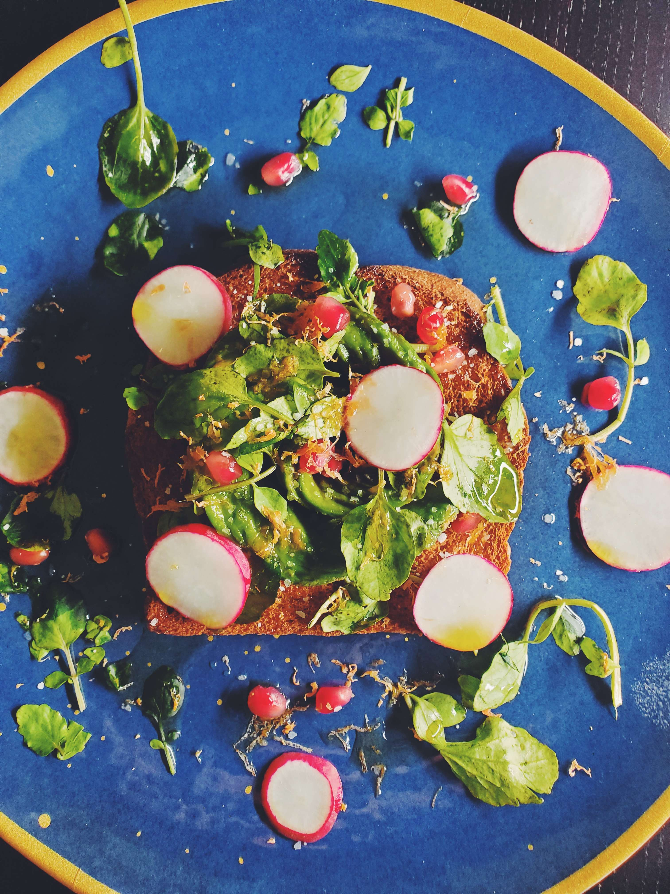
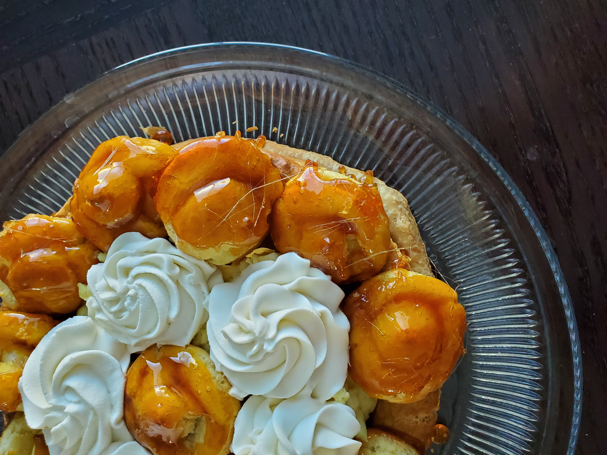

Welcome to Daniel's Food Journal

This is a collection of my favorite recipes that I have tried and enjoyed. One of my favorite joys in the world is food.
I think food is the best way to create community and bring people together.
Also, I find cooking to be one of the most therapeutic and rewarding activities.
I hope this blog can help you find insirpation for your next meal and bring you closer to those you love.
My Favorite Recipes

Rosemary Chicken Meatballs with Tomato Orzo

Gateau de St. Honore

Pork Dumplings
About Me
My name is Daniel and I am a software engineer who loves to cook. I have been cooking for as long as
I can remember and have always found it to be a great way to relax and unwind after a long day
I started this blog as a way to share my favorite recipes with others and to connect with other food lovers.
I hope you enjoy the recipes and find some inspiration for your next meal!
The video to the right is a tutorial done by one of my favorite chefs, Claire Saffitz. She is a pastry chef who has
a YouTube channel called "Dessert Person" where she shares recipes and tutorials for all kinds of desserts.
I highly recommend checking out her channel if you are interested in learning how to make delicious desserts!